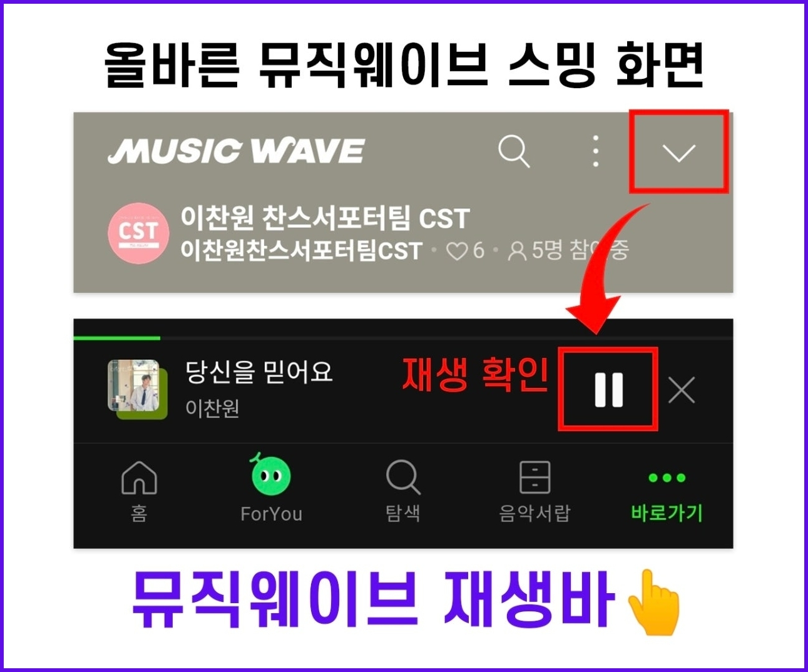
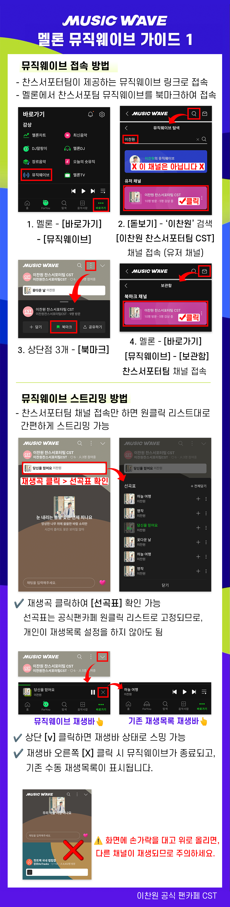
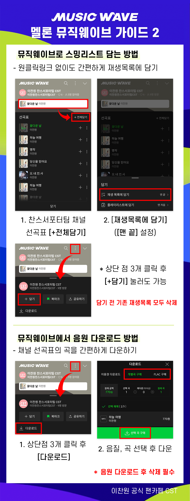

🌊 MELON MUSIC WAVE
멜론 뮤직웨이브 참여 가이드
채널 입장만으로 자동 연속 스밍! 스밍리스트 담기가 어려운 초보 찬스님이나 공폰 관리에 가장 편리합니다.
핵심 장점
🔥 채널에 들어가면 별도 조작 없이 선곡표대로 자동 스밍이 유지됩니다!
1. 채널에 들어가면 자동 스밍이 됩니다
스밍리스트 담기 어려운 분들이나 공폰으로 스밍하시는 분들에게 매우 편리합니다.
총공팀에서 설정해 둔 공식 선곡표대로 24시간 자동 스밍이 유지됩니다.

2. 스밍리스트를 한 번에 내 재생목록으로 담기
해당 채널의 전체 선곡표를 클릭 한 번으로 내 멜론 재생목록에 그대로 담을 수 있습니다.

3. 멈춤 현상 대폭 감소
일반 재생목록 대비 '기계적 스트리밍 감지'나 '기존곡을 계속 재생하겠습니까' 팝업으로 인한 멈춤 현상이 적습니다.
